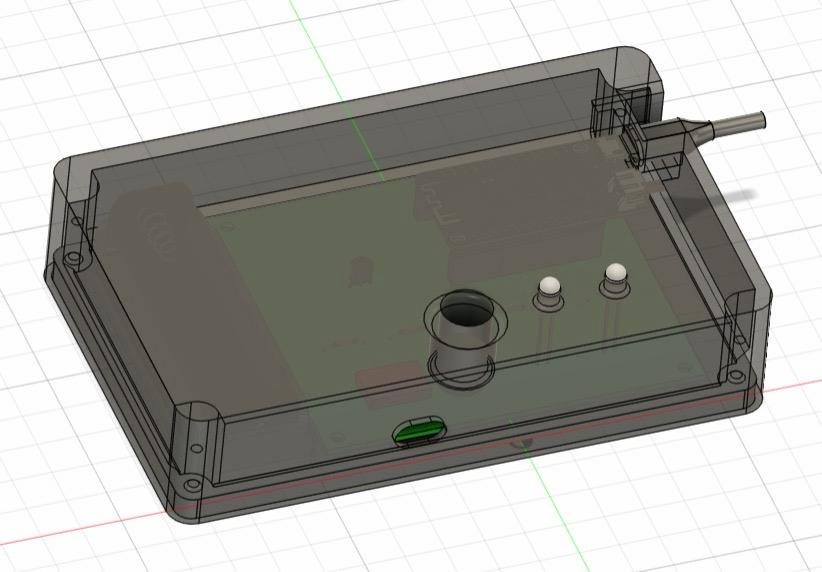
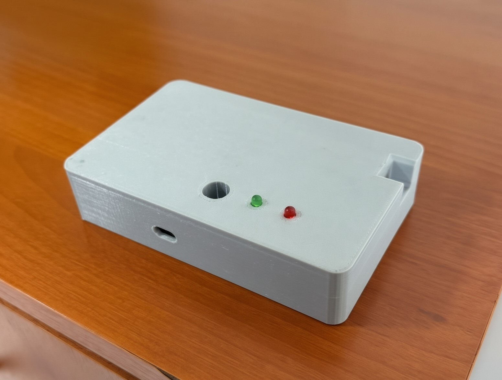
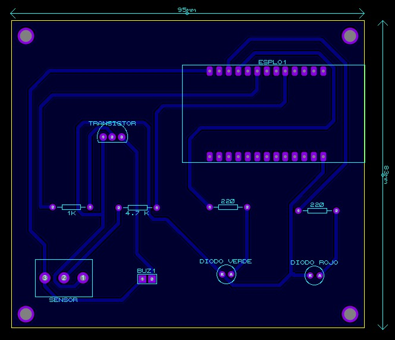
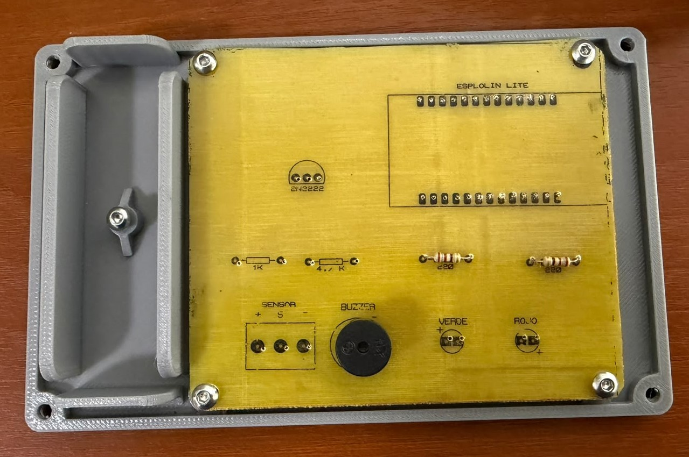
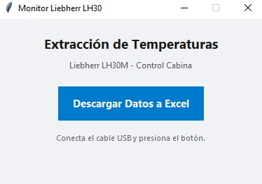

SISTEMA DE CONTROL Y MONITOREO DE TEMPERATURA DE LA MAQUINA LIEBHERR
Resumen del proyecto
La máquina LIEBHERR es una recogedora de chatarra que funciona en la siderúrgica de LAS LOMAS. Debido a su constante uso, la placa de potencia de la máquina tiende a sobrecalentarse, lo que genera fallas en el sistema y posibles interrupciones al funcionamiento de la planta.
Por ello, el presente proyecto tiene como objetivo el desarrollo de un sistema para el control y el monitoreo atraves de un sensor de temperatura, que permita mantener la placa de potencia dentro de un rango seguro de funcionamiento y evitar daños al sistema, dando aviso al operador cuando se este presentando un sobrecalentamiento.
Tecnologías utilizadas
- ESP32 LOLIN Lite
- Python
- Proteus
- Fusion 360
- Tkinter
- Componentes electrónicos
Diseño 3D y Estructura
El modelado se realizo usando Fusion 360. Se tomo en cuenta la facilidad de ensamblaje, dimensiones de los componentes electrónicos y la implementación de una bateria de manera interna. Una vez finalizado el diseño, se imprimió en 3D y se realizaron pruebas de ensamblaje y ajustes finales para asegurar un encaje perfecto de todos los componentes, ademas de una buena resistencia a las condiciones en las cuales estara operando.


Placa Electrónica y Circuitos
El diseño esquemático y PCB se realizaron con el software Proteus. Se realizó una selección cuidadosa de componentes en base a lo que el sistema requiere, ademas de la compatibilidad de los mismos para el cableado interno y montaje dentro del prototipo. Luego, se imprimió la placa y se realizaron pruebas de funcionamiento y ajustes finales para asegurar un correcto y acertado funcionamiento del sistema.


Componentes seleccionados
Se seleccionaron los componentes necesarios para poder procesar toda la informacion del sistema y generar un aviso al operador al momento de que ocurra un sobrecalentamiento. Dentro de esos componentes resaltan: un LOLIN32 Lite, resistencia, transistor, buzzer y leds para dar aviso al operador, ademas de un sensor de temperatura para la lectura de la placa de potencia. Por ultimo, se diseño un pequeño software para descargar el registro que se lleva de las temperaturas registradas en la placa de potencia.


